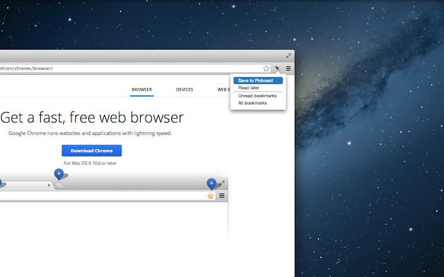
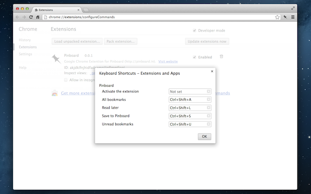

Pinboardへブックマークを保存するChorme拡張は数多にあります。 しかし、自分のほしい機能を持つ拡張をざっと探したところ見当たらなかった ので、作ってみました。あと、Chorme拡張を作ってみたかったというのもあり ます。
 
次の機能が欲しかったものでした。
- ブックマーク保存のポップアップウィンドウで「タグクラウド」を表示する。
- 「ブックマーク保存」、「あとで読む」、「すべてのブックマークを表示」、「あとで読むリストを表示」をキー操作で行える。
注意点としては、2. のキー操作はGoogle Chrome Betaのみ利用可能です。 キー操作をchrome.commandsという開発中のAPIで実装して いるためです。
インストール
Chrome ウェブストア - Pinboard からインストールしてください。
Source Code
Githubで公開しています。
yasuyk/Pinboard-Chrome-Extension
Pinboard検索の拡張について
Pinboard Searchがお勧めです。
Pinboard Searchは、ChromeMigemoを入れると更に便利になります。